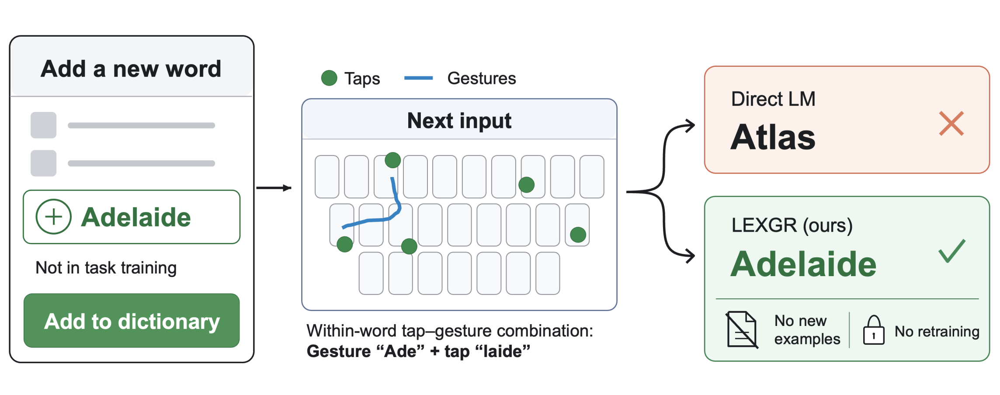
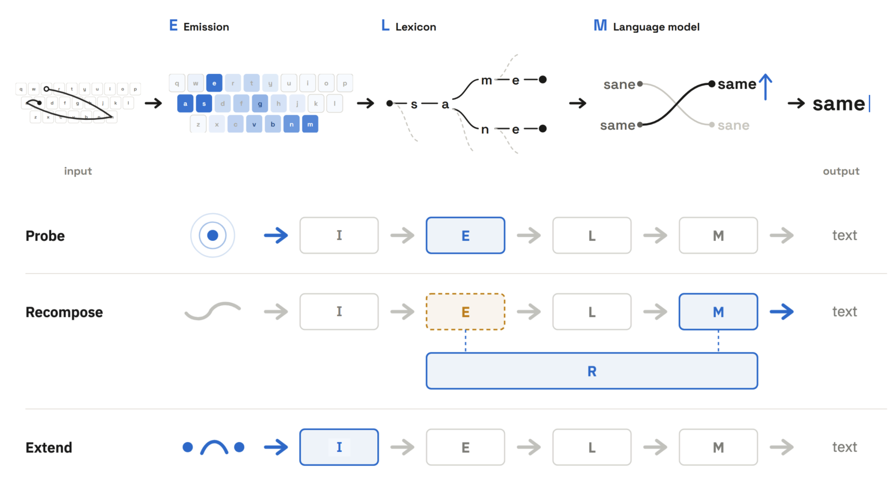
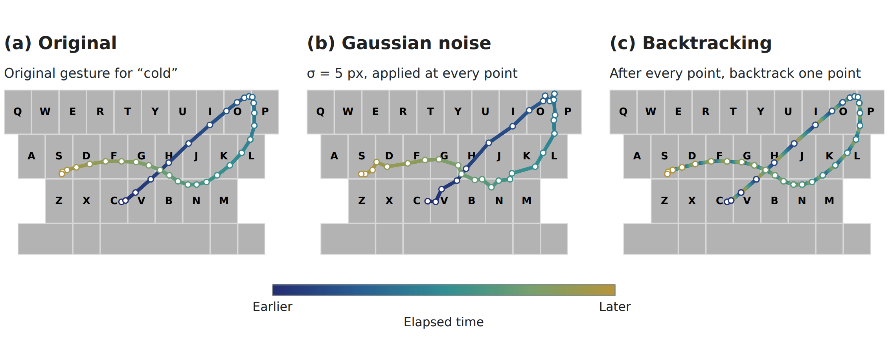
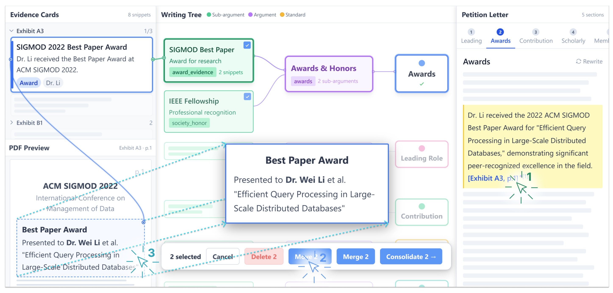
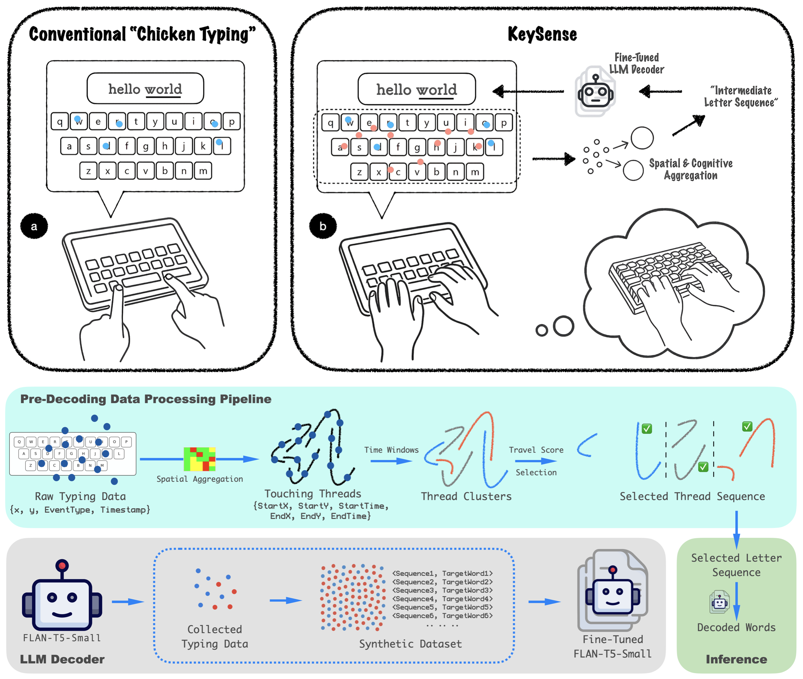
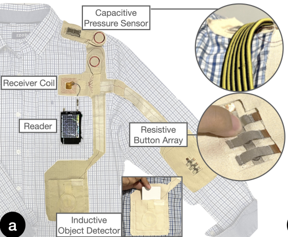
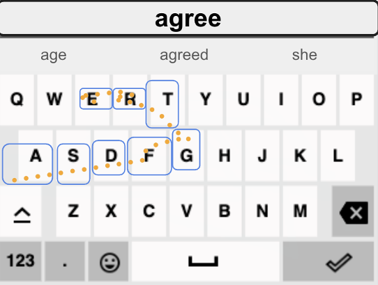

Tony Haolin Li
I am a third-year Ph.D. candidate in the Computer Science Department of Stony Brook University, advised by Prof. Xiaojun Bi. I received my B.E. in Computer Science and Technology from University of Science and Technology of China (USTC) in 2024.
In summer 2026, I worked as a GenAI Research Intern at Samsung Ads in Mountain View, CA, on Generative AI and Agentic Systems.
My research focuses on Large Language Models and Generative AI for human-computer interaction. I study how intelligent systems can enable more natural, efficient, and adaptive interactions between humans and technology.
* Equal contribution.

LEXGR lets users add new names and terms to an LLM-based keyboard without word-specific examples or retraining. Its candidate-conditioned decoder supports the new vocabulary across taps, gestures, multi-stroke gestures, and mixed tap-gesture input.

DecoLego is a functional framework for understanding and extending keyboard decoders. It separates signal, lexicon, and language evidence into testable components, supporting controlled diagnosis, recomposition, and adaptation to additional input forms.

This work introduces backtracking, a lightweight, training-free transformation that obscures motion patterns linked to user profiling while preserving the spatial path needed for gesture decoding. It reduces attribute inference to chance levels while retaining up to 98% of Top-1 recognized words.

Arbor supports source-grounded legal writing through a persistent, expert-editable argument structure that coordinates generation, provenance, verification, and revision. The same hierarchy lets attorneys organize evidence, regenerate bounded sections, and trace cited claims back to source documents.

KeySense turns commodity touchscreens into hands-down ten-finger keyboards by distinguishing resting contacts from intentional keystrokes and decoding them with a fine-tuned large language model. It reuses physical-keyboard muscle memory, enabling fast, low-fatigue text entry without extra hardware.

BIT is a smart textile interface that eliminates batteries, ICs, and connectors, using multi-resonant circuits and wireless electromagnetic coupling for power and sensing. It supports resistive, capacitive, and inductive sensors, enabling seamless, sustainable, and flexible interactions in wearable technology.

This demo presents an LLM-powered VR text entry system that enhances input accuracy and flexibility. Supporting raycasting and joystick-based tap and word-gesture typing, it integrates a fine-tuned FLAN-T5 decoder, achieving 93.1% accuracy on word-gesture typing and 95.4% on tap typing.